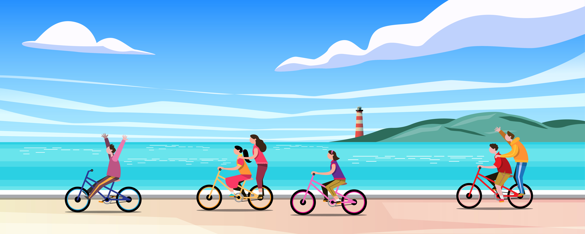

Actualités et Evenements
La Ville de Bruxelles devient une "Ville Rose"

Jusqu’au 31 octobre, participez à la Marche Rose avec l’Adeps et Pink Ribbon
Cette année encore, l’Adeps s’associe à l’asbl Pink Ribbon et vous invite à faire 10.000 pas par jour du 1er au 31 octobre....
12 Novembre 2022 - Eurovélo de passage à la frontière
Une nouvelle voie Vers la Belgique et un Nouveau site internet L’asphalte, ça roule bien, mais ce n’est pas très bucolique...
3 Novembre 2022 - Simplon ouvre un centre de formation à Bruxelles
Sur le territoire national, Simplon.co continue son expansion afin de proposer des formations aux métiers....